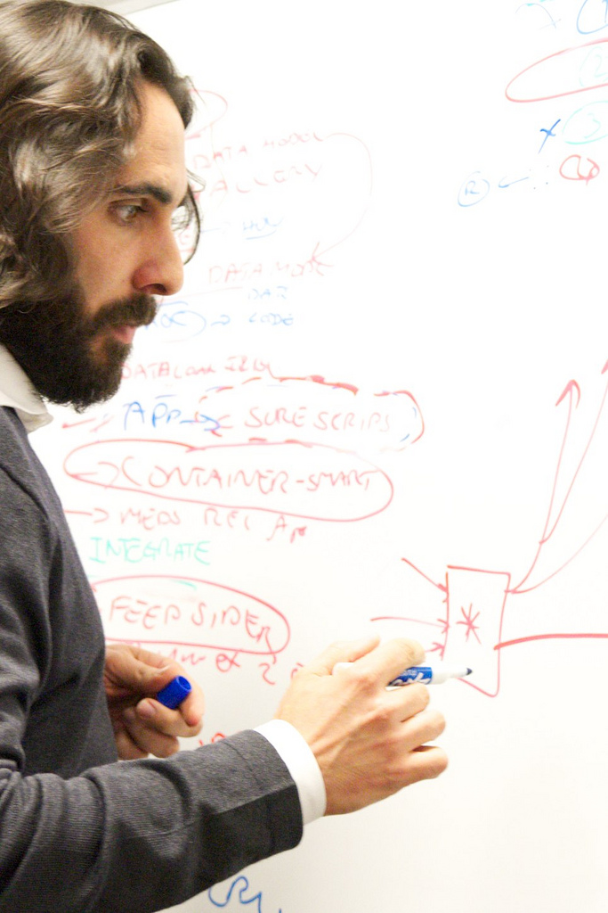

 I'm a software engineer and architect. I care deeply about helping individuals control their identity and data online, using a combination of web technology, open data formats, and cryptography.
I work for Mozilla.
I'm a technical advisor to the SMART project at Harvard Medical School, and to Creative Commons.
I created and maintain the Helios Voting System.
I co-created the RDFa structured data standard.
I received a PhD in Computer Science from the Cryptography and Information Security group at MIT, where I was advised by Ron Rivest.
You can contact me at ben@adida.net.